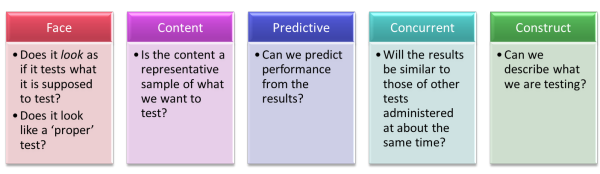

Module Three ELT specialism: testing
 |
This guide assumes that you have already
followed the one on testing, assessment and evaluation and/or
know about testing formats and purposes. If you would like
to open that guide in a new tab,
click here.
|
 |
Which test, when? |
Testing happens more than once for the Module Three course:
- It forms an integral part of the needs analysis (diagnostic assessment) but the testing must come after the needs analysis or you won't be able to target the test properly.
- It is central to the evaluation of the course itself both during the course (formative assessment) and at the end (summative assessment).
That means that Part 2 (the Needs Analysis) and Part 4 (the Assessment) are both impacted by the ways you test and your understanding of the guiding principles. That's nearly half the whole of Module Three. There are four areas:
- As part of but not instead of the needs analysis
process you need a test which will perform a dual function. It will
be a dual diagnostic and proficiency test.
- it will tell you how well people have already mastered the language and skills they need before the course begins.
- it will tell you where their strengths and weaknesses lie to inform the course design.
- During and at the end of the course, part of your evaluation of its success must involve tests to see how well the learning objectives are being or have been addressed. These are achievement tests.
- Additionally, you will want to include some type of formative assessment and evaluation while the course progresses. That, too, will be a form of achievement testing and may also include elements of diagnostic testing to help you plan where to go next and know whether you need to tweak the course programme to take account of the learning process.
- Finally, at the end of the course, you need to evaluate its success and comment on its suitability for future use.
The principles set out below apply to all of these.
 |
The three essentials to discuss |
Three fundamental characteristics of a test were established in the
general guide to this area. What were they?
Click here when you have an answer:
- Reliability
A reliable test is one which will produce the same result if it is administered again. - Validity
- does the test measure what we say it measures?
- does the test contain a relevant and representative sample
of what it is testing?
- does the test measure what we say it measures?
- Practicality
Is the test deliverable in practice?
Which is the most important for the purposes of Module Three? Click to go on.
You are dealing with a defined group of people (possibly quite a
small group or even a single learner) who will only take any of your tests once, probably.
Reliability is not, therefore, a central issue.
You are not constructing a public examination or an institution-wide
repeatable test. You are targeting only what you need to know
about this group for the purposes of planning a course
for them. You will need to make this clear in
your discussion if only to reassure the reader-marker that you
understand the principle involved.
It is validity and
practicality that we are mostly looking for.
Reliability will become an issue if you plan to repeat the course with
the same end-of-course achievement test.
 |
Issues of validity |
You will recall that there are 5 types of validity to consider:

Think of some comments to add to the right-hand boxes concerning your Module Three focus and then click the graphic to reveal some.

There will be variations.
For the diagnostic test, all the above apply but for an end-of-course
achievement test, predictive validity may be less crucial.
Construct validity and content validity will still be important.
You have to test what has been taught / learned and you have to be able
to describe what you are testing.
 |
Issues of practicality and reliability |
More than likely, you will be conducting the diagnostic / proficiency test at a distance but the achievement test will be a face-to-face event. There are implications:
- You need to make sure that the test is reliable if different people take it at different times. That means clear instructions to the subjects and/or colleagues elsewhere.
- You need to consider the group's nature:
- If it's a large group, use a test format which allows for as much objective marking as possible. The larger the group and the larger the number of markers, the less reliable subjective marking becomes.
- If it's a small group or a single student, you can use more subjective marking because reliability is less of an issue
- There may be institutional constraints concerning the amount of time which can be devoted to this both by the group and by the markers and course designer (you). If there are, discuss them.
 |
Impact: the fourth factor |
This is a fourth factor you may like to consider, especially
regarding the end-of-course achievement test.
Impact refers to
the effect the process of testing has on the test takers and the
course itself. You don't need to discuss this when referring
to the diagnostic/proficiency, pre-course test but impact may be an
issue when you come to discussing the achievement test.
However, any in-course and end-of-course testing you do may impact
the course itself:
- the learners must perceive the tests as a fair assessment of their progress (face validity)
- the teachers may be influenced by the nature of the tests they know will be done (washback / backwash)
- the learners may become fatigued and demotivated by too much testing
- testing can be a time-consuming process and time may be at a premium
Designing the test |
When you get down to designing the actual test items much will, naturally, depend on what it is you want to test. Testing skills vs. language items such as structure and lexis requires a different approach usually. You need to think carefully before you plunge in but here are some ways of doing it.
Test-item types
Here's a list. Think of the advantages and disadvantages to put in the right-hand areas and then click on the graphic.

You will need to discuss the (dis)advantages in these sections of your Module Three report. This discussion will be brief when it is inserted into the Needs Analysis section because you are only concerned with diagnostic / proficiency testing here and you only have 900 or so words to devote to the whole section.
Response types
The next thing to consider is how you want the subjects to respond to the items. On this will depend how long the test takes, how much data you can gather and how subjective, or otherwise, the marking is.
Here's another graphic to respond to.

All tests are compromises so there are pros and cons to discuss in the report:
- Adding reliability by making marking as objective as possible and using discrete items with limited response types will reduce validity by disallowing direct testing of the target skill.
- Making sure you have high levels of content validity may mean employing subjective marking of free-response items and a loss of reliability and practicality.
Only you can decide, given the priority you place on certain
kinds of data, what the appropriate mix is but you must be clear in
your discussion that you are aware of the compromises you have made.
The questions posed above about which test types and item
designs are appropriate for the data you want to capture are not easy to
answer (and cannot be answered for your specific module focus here). What must be clear in the
discussions in the Needs Analysis section but particularly in the Course
Assessment section of the information report is that you have
thought about it all and based your tests on principles rather than
intuition and practicality alone.
 |
Writing the testing sections for Module Three |
In your report, you will have to describe and justify your testing
procedures but also discuss them (twice). In other words, you will embed a
discussion inside an information report. That discussion will also
include an evaluation of whether the test actually served its function.
In the in-service training section of this site there are guides to
assessing the four main language skills independently. They are:
The guide to assessing
Listening Skills
The guide to assessing
Reading Skills
The guide to assessing
Speaking Skills
The guide to assessing
Writing Skills
If you have followed the guide to structuring the whole of Module Three, you will know how that works but here's the overview

The content will depend on whether this forms part of the Needs Analysis or part of the Course Assessment section. In either case, you need to include all tests in your appendices.
- For the Needs Analysis, keep it brief and to the point but don't be afraid to refer forward to a deeper discussion of principles which will come later.
- For the Course Assessment section, you need more discussion
and more depth.
Here, too, you must devise ways of canvassing people's views about the course generally and for some discussion of questionnaire formats (which can be used for face-to-face debriefs, too) you should refer to the relevant section of the guides to Needs Analyses on this site.
 |
Avoid the obvious errors |
Examiners' reports contain more or less the same catalogue of
weaknesses year after year so be careful to avoid any of the
following being levelled at your use of tests and evaluation
procedures.
For this section, the most frequently cited problems are:
- a failure to distinguish between formative and summative
assessment
- Make sure you show that you understand the difference so you can be clear about what is being tested and why.
- failing to link assessment procedures to the course objectives
- Make sure you show that all your testing procedures are designed with the course objectives in mind.
- being over-reliant on public examination materials
- This is especially relevant for assignments focused on preparation for examinations. Be aware that simply lifting test items of whole parts of the target examination is rarely a good way to assess the learners. Do not confuse proficiency testing (the examination) with summative and formative assessment on your course.
General references for testing and assessment.
You may find some of the following useful. The text by Hughes
is particularly clear and accessible:
Alderson, JC, 2000,
Assessing Reading, Cambridge: Cambridge University Press
Cambridge English Language Assessment,
2013, Principles of Good Practice Quality management and
validation in language assessment, available at
http://www.cambridgeenglish.org/images/22695-principles-of-good-practice.pdf
has some useful material
Carr, N, 2011, Designing and Analyzing Language Tests: A Hands-on Introduction to
Language Testing Theory and Practice, Oxford: Oxford University
Press
Douglas, D, 2000,
Assessing Languages for Specific Purposes. Cambridge: Cambridge University Press
Fulcher, G, 2010, Practical Language Testing, London: Hodder Education
Harris, M & McCann, P, 1994, Assessment, London: Macmillan Heinemann
Heaton, JB,1990, Classroom Testing, Harlow: Longman
Hughes, A, 2003, Testing for Language Teachers, Cambridge: Cambridge University Press
Martyniuk, W, 2010,
Aligning Tests with the CEFR, Cambridge: Cambridge University Press
McNamara, T, 2000, Language Testing, Oxford: Oxford University Press
Rea-Dickins, P & Germaine, K, 1992, Evaluation, Oxford: Oxford University Press
Underhill, N, 1987,
Testing Spoken Language: A Handbook of Oral Testing Techniques,
Cambridge: Cambridge University Press
| The Module Three ELT Specialism areas: | |||
| Choosing the topic | Writing the essay | The introduction | Needs analysis |
| Testing | Course proposal | Module 3 reading list | Before you submit |